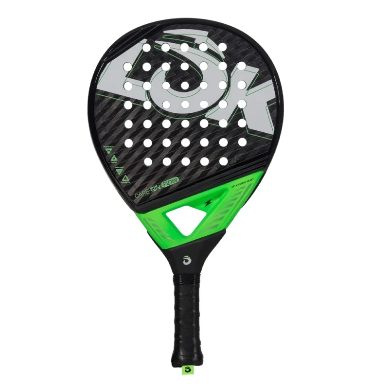

Lok
Lok Carb-on Flow 2024
IniciaciónControlRedondaBalance bajo
79,95 € 249,84 €
Conoce todo sobre Lok Carb-on Flow 2024. Te enseñamos la mejor comparativa de precios del mercado. Consigue las mejores condiciones gracias a PadelZoom.
Comparar con otras palas →Características
| Nivel | Iniciación |
|---|---|
| Estilo de juego | Control |
| Forma | Redonda |
| Balance | Bajo |
| Tacto | Medio |
| Peso | 360-375 g |
| Material del marco | Fibra de carbono |
| Material del plano | Fibra de carbono 6K |
| Material del núcleo (goma) | Custom EVA |
| Temporada | 2024 |